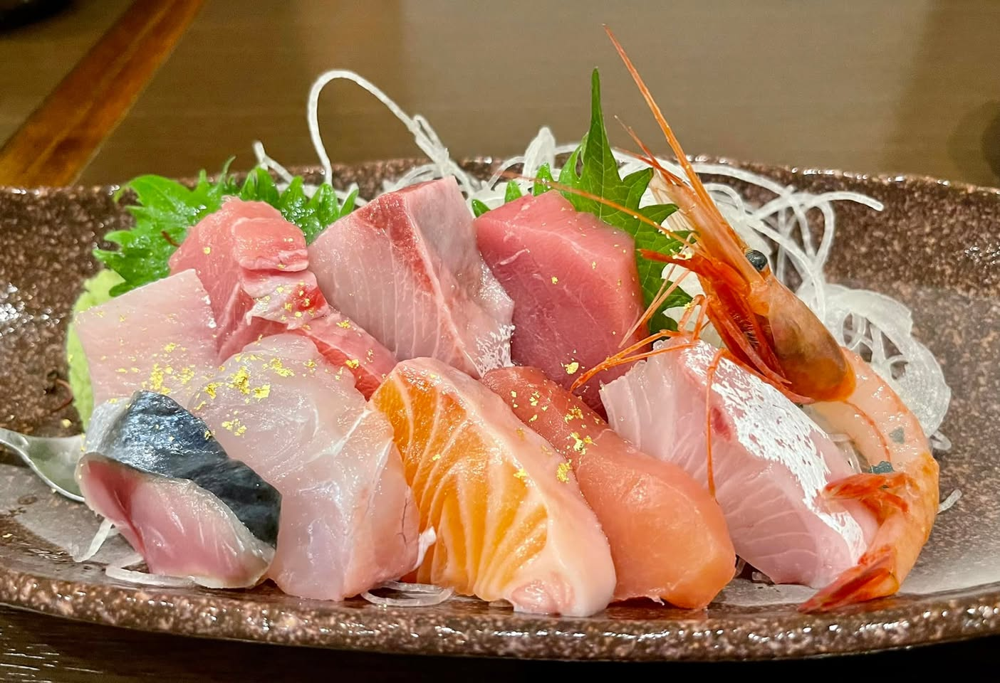
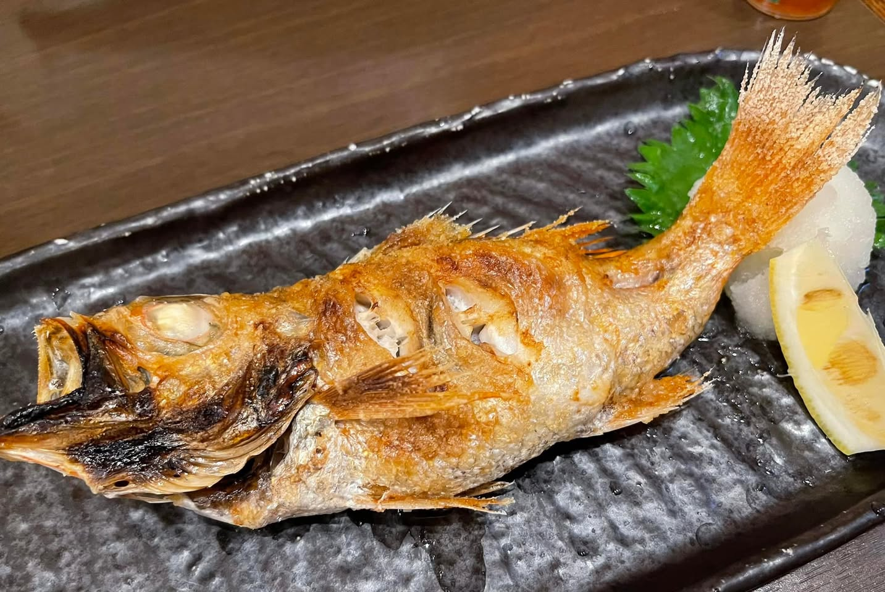
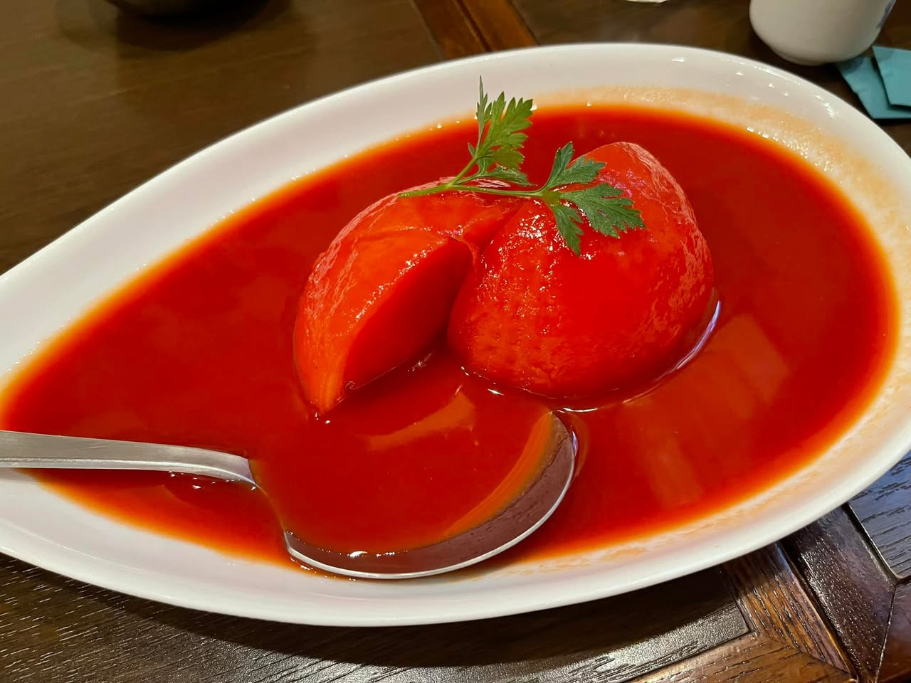

2022年8月、能登半島へ行った。石川県の北側に突き出た半島で、日本海に囲まれている。観光地として知られながら、実際に足を運んだのはこのときが初めてだった。
総持寺祖院
能登に着いてまず向かったのが総持寺祖院。曹洞宗の大本山・総持寺の前身となった寺院で、輪島市門前町にある。
山門の前に立って、その大きさに少し言葉を失った。重厚な木造の三門が、青空を背景に立っている。観光客はほとんどいなかった。静けさの中で、思ったより長い時間そこに立っていた。

刺身に金箔がかかっていた
能登から戻り、金沢の居酒屋和台で夕食を食べた。海鮮が並ぶ中で、刺身の上に金箔がかかっていた。刺身に金箔がかかっているのを見たのは初めてだった。
味がどう変わるというわけではない。でも、それを出そうと思う気持ちが金沢らしいというか、非日常感がある。金沢の金箔文化が居酒屋の料理にまで浸透しているのかと思った。



食事全体として、能登は食べ物が良かった。海が近いから当たり前といえばそうなのだが、何を食べてもはずれがなかった。
能登は「遠い」というイメージがあって後回しにしていた。実際に行くと、そんなに遠くない。半島の先まで行けば海も山もあって、食も良い。もっと早く来ればよかったと思った。
今回立ち寄った場所
1
総持寺祖院
石川県輪島市門前町 / 曹洞宗大本山・総持寺の前身。重厚な山門で知られる。境内は無料で散策可能。
2
金沢居酒屋 和台
石川県金沢市此花町４−１６ / 能登からの帰りに立ち寄った居酒屋。金箔がかかった刺身など海鮮が充実。